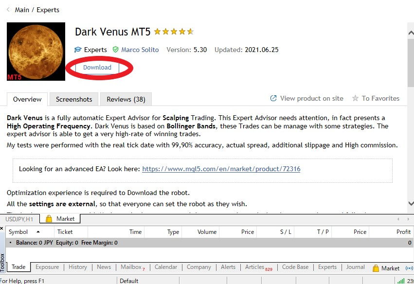
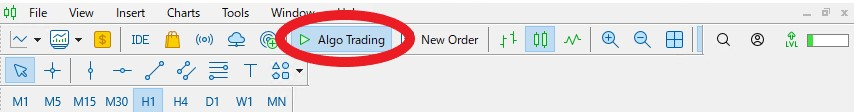

3. Introduction of automatic trading tools
At this point, you have opened an account with XM Trading. From here, I will introduce an automated trading tool called EA (Expert Advisor), but before that, we need to install a trading platform that runs the automated trading tool. There are two types of trading platforms, MT4 and MT5, and you can select either one when opening an account (step 1 on the previous page). Please install the same trading platform that you selected at this time. Here, I will introduce the installation method on the assumption that MT5 is selected.
Step 1: Install Trading Platform (MT4 / MT5)
Click here to open the MT4 / MT5 download page.
MT4 / MT5 Platforms
Click on the platform of MT4 or MT5 selected when opening an account that applies to your device.

Click Download.
Run the downloaded file to install it. Click Finish to close the setup screen and launch MT5 from the desktop shortcut. Click Next. Select "Connect with existing trading account", enter the login ID as shown in the account opening guidance email automatically sent from XM when opening an account, and select the server. Also, enter the password you set when opening the account and click Finish.
Step 2: Install EA (Expert Advisor)
Click "Market" at the bottom right of MT5.

First, let's use a free and excellent EA. Click "Free" in the market window. I am using this "Dark Venus MT5". Click Download.
You can see the test operation result of this EA from the tab of the screenshot.
The downloaded EA will be added to the Market item of the EA, so drag and drop it onto the chart of the currency pair you want to trade. Check "Allow modification of signal settings" and "Algorithm trading" and click OK.
If "Algo Trading" is a green triangle mark, automatic trading will start. If it is a red square mark, automatic trading is off. You can turn automatic trading on / off by clicking here.
Step 3: VPS contract
Up to this point, automatic trading has become possible, but as it is now, automatic trading can only be done while the PC is started and MT4 / MT5 is open. Therefore, let's make a contract for VPS (Virtual Private Server) and prepare an environment where EA can perform automatic transactions 24 hours a day, 7 days a week. There is a charge for a VPS contract, but it's not very expensive and costs around $ 15-30 / month, so it's well worth the contract. You can contract with a VPS vendor you find yourself, or you can use XM's VPS.